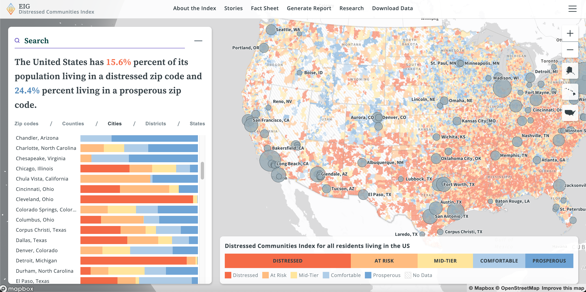
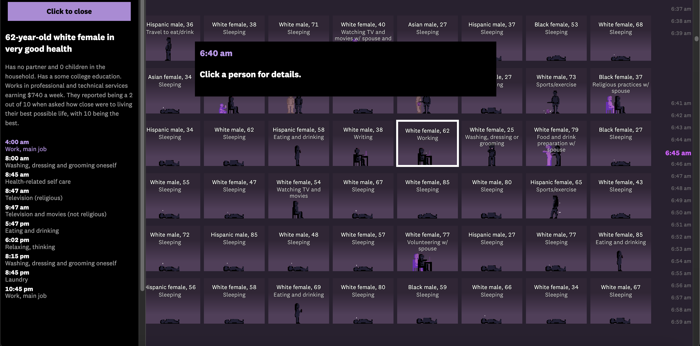

2024 DCI Interactive Map

This website features an interactive map of the United States and shows the DCI, or Distressed Communities Index, across the country. Using 5 different colors to represent different levels of distress, the user can see the DCI levels of every zipcode throughout the country easily. In addition, one can search up any county and see the DCI makeup within that county itself. There is also data visualization about the inner DCI of counties on the left. There is also an option to only see counties with a certain DCI level. Overall, this site gives a good visualization of the DCI levels throughout the country and also for every U.S. as well.
Here is the link to the website: 2024 DCI Interactive Map
24 Hours in an Invisible Epidemic

This website utilizes data visualzation, scrolling, self-paced navigation, and storytelling to emphasize the impact of the lonliness epidemic. As the user initially scrolls, the site tells the story of a real individuals' daily routine. As they scroll further, the user can pick from a plethora of demographics and see the details of each person's life. The site then explains how lonliness and happiness are positvely correlated and how there is a lonliness epidemic in the nation by providing data visualization. The user then is able to see how much social interaction each person gets throughout the day and their happiness as well. Using this kind of method allows the user to explore the site at their own pace and interest. It effectively showcases how widespread the lonliness epidemic truly is by showcasing both facts from data visualization and hitting emotional points by illustrating the lives of real people.
Here is the link to the website: 24 Houts in an invisible epidemic